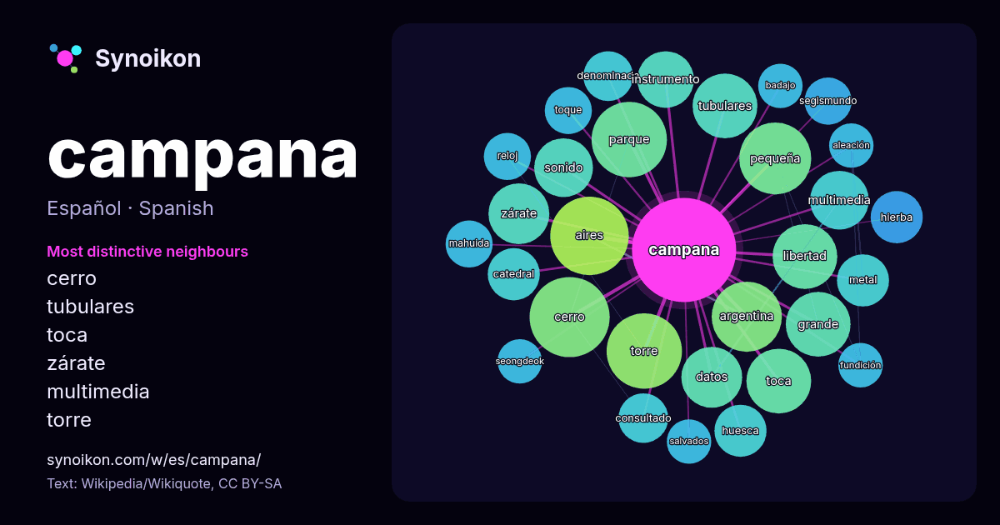

Español · lista de palabras del día
campana
“bell” · Las palabras encontradas a su alrededor en 1184 apariciones de Wikipedia, Wikiquote.

Vecinos más característicos
- cerro 22×
- tubulares 18×
- toca 17×
- zárate 16×
- multimedia 15×
- torre 14×
- parque 13×
- libertad 13×
- aires 12×
- pequeña 12×
- huesca 11×
- sonido 11×
- hierba 11×
- consultado 11×
- instrumento 11×
- grande 10×
- mahuida 10.0×
- segismundo 9.8×
- datos 9.5×
- toque 9.4×
× = cuántas veces más que en el texto general de Wikipedia.
Vecinos más frecuentes
- ciudad 33
- forma 29
- cerro 26
- aires 25
- nacional 24
- parque 23
- torre 23
- pequeña 21
- provincia 21
- argentina 20
- grande 17
- libertad 17
- toca 17
- tubulares 17
- nombre 16
- partido 16
- datos 15
- zárate 15
- llamada 14
- localidad 14
En contexto
- Campana puede hacer referencia a: Campana (aleación) o «metal de campana»; tipo de aleación metálica muy resistente. Campana (chimenea), parte de la chimenea Wikipedia snippets · Campana
- producen el sonido desde el interior. La campana semiesférica es la campana kane, que se golpea externamente. Las campanas hinduistas y budistas, llamadas ghanta Wikipedia snippets · Campana (instrumento)
- 1759, fue comprada por Francisco Álvarez Campana. Desde entonces el lugar se comenzó a llamar "Rincón de Campana" En 1860, las tierras fueron compradas Wikipedia snippets · Campana (Argentina)
- La Campana de la Libertad (en inglés: Liberty Bell), localizada en Filadelfia (Pensilvania, Estados Unidos), es una campana de gran importancia histórica Wikipedia snippets · Campana de la Libertad
- el partido de Campana han alcanzado relevancia y reconocimiento nacional e internacional debido a la pujanza de sus industrias. Campana (cabecera y ciudad Wikipedia snippets · Partido de Campana
- La leyenda de la campana de Huesca cuenta que Ramiro II el Monje, rey de Aragón, decapitó a trece nobles que se opusieron a su voluntad. La historia es Wikipedia snippets · Campana de Huesca
- Zárate - Campana es una aglomeración urbana que se extiende entre las ciudades argentinas de Zárate y Campana, dentro de la provincia de Buenos Aires, Wikipedia snippets · Zárate-Campana
- La Estación Campana es una estación de tren ubicada en la ciudad de Campana, en la provincia de Buenos Aires, Argentina. Es una estación de trenes del Wikipedia snippets · Estación Campana
Más palabras
- agua
- arte
- bosque
- caballo
- camino
- canción
- ciencia
- ciudad
- clima
- comida
- corazón
- desierto
- dinero
- dios
- espejo
- estrella
- familia
- fuerza
- gato
- historia
- invierno
- isla
- jardín
- lengua
- lluvia
- madre
- mapa
- miel
- montaña
- muerte
- naturaleza
- oro
- otoño
- pan
- perro
- puente
- reloj
- sal
- salud
- silencio
- sombra
- tiempo
- tormenta
- trabajo
- tren
- té
- verano
- verdad
- vida
Precalculado el 2026-10-09 con los ajustes predeterminados (±5 palabras, corpus mediano). El mapa interactivo puede actualizarlo con datos en vivo.
Interfaz traducida automáticamente; se agradecen correcciones.